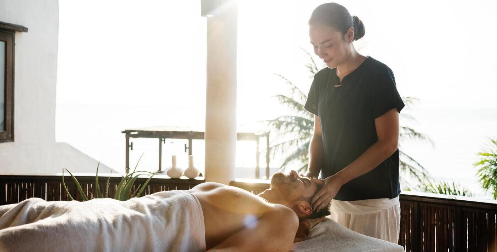
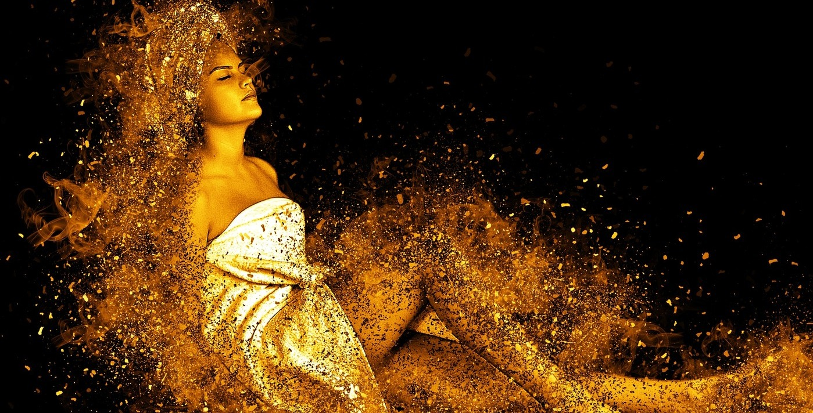
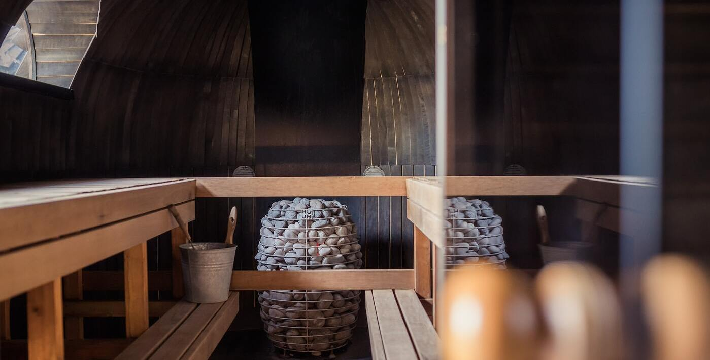
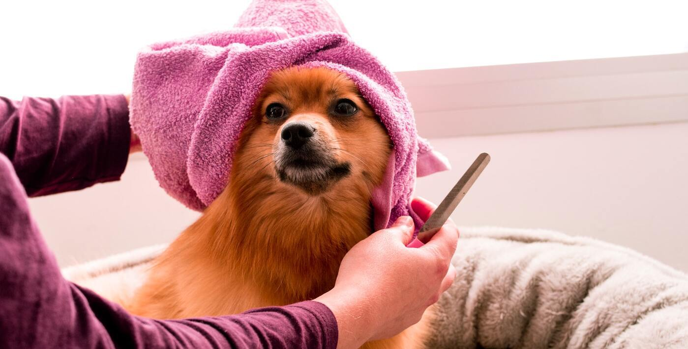

Terapie și masaj în aer liber.

Relaxare incendiară în spa-ul nostru.

Atmosfera pe care o veți întâlni.

Băi relaxante și tratament ca al divelor.

Un Welness Center unde chiar și animalele au beneficii pentru a se relaxara.